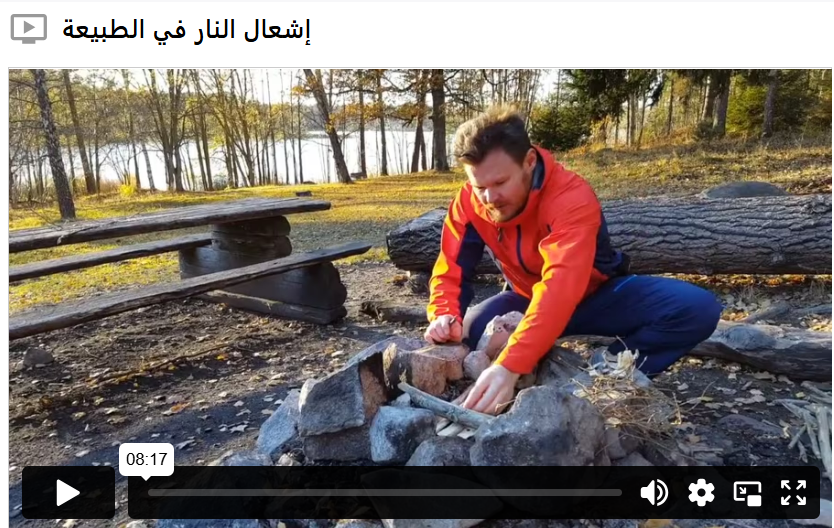

إشعال النار في الطبيعة
هناك عدة أغراض لإشعال النار في الطبيعة. أولاً للطهي، وثانياً للحفاظ على الدفء، وأيضاً لإضفاء جو مريح وممتع على مكان التخييم بواسطة نار المخيم. تأكد دائماً من تجهيز الحطب الجاف، وقم بفرز القطع الصغيرة لتبدأ بها والقطع الأكبر لتضيفها لاحقاً. وتذكر أنك لا تملك الحق في قطع الأشجار أو كسر الأغصان الحية من الأشجار لاستخدامها كوقود.

عندما تخطط لإشعال نار في الطبيعة، هناك عدة أمور يجب مراعاتها. السلامة هي الأهم، ويُسمح بإشعال النار فقط عندما لا يكون هناك حظر على إشعال النار. في أجواء جافة جداً أو عند وجود رياح قوية، قد يُصدر حظر على إشعال النار، وفي هذه الحالة يُمنع إشعال أي نار مفتوحة.
قبل إشعال النار، من المهم أن تكون مستعداً بأداة لإطفائها، مثل زجاجة ماء أو دلو.
إذا كنت ستشعل ناراً مفتوحة، فمن الأفضل دائماً استخدام موقد جاهز في أماكن الشواء أو قرب مأوى الرياح. يمكنك أيضاً بناء موقد خاص بك عن طريق إنشاء قاعدة من الرمل أو الحصى، ثم تشكيل حلقة من الحجارة حولها. لا تضع النار قريباً جداً من الشجيرات أو الأشجار، لأن الشرر واللهب قد تنتقل مع الرياح وتسبب اشتعالها.
موقد النار يمنع جذور الأرض من الاشتعال وانتشار النار. كما تمنع الحلقة الحرارة المنبعثة من النار، لذلك إذا كنت تشعل النار لتدفئة نفسك، قد تحتاج إلى بناء عاكس حرارة على شكل نصف دائرة أو إشعال النار قرب صخرة كبيرة. الصخرة تعمل أيضاً كحاجز للرياح، مما يسهل إشعال النار في حالة الرياح. لكن تجنب إشعال النار مباشرة على الصخور أو الجبال، لأن الحرارة قد تسبب تشققها.
تأكد من عدم ترك النار بدون مراقبة أبداً. بعد الانتهاء من إشعال النار، من المهم إطفاؤها جيداً بالماء وإعادة المكان إلى حالته الأصلية قدر الإمكان. يمكنك أيضاً تغطية الرماد المتبقي بالرمل أو التراب.
ابقَ بالقرب من النار لمدة لا تقل عن عشر دقائق بعد إطفائها للتأكد من عدم وجود جمر يمكن أن يعيد إشعال النار. وأخيراً، بلل الأرض حول مكان النار جيداً.